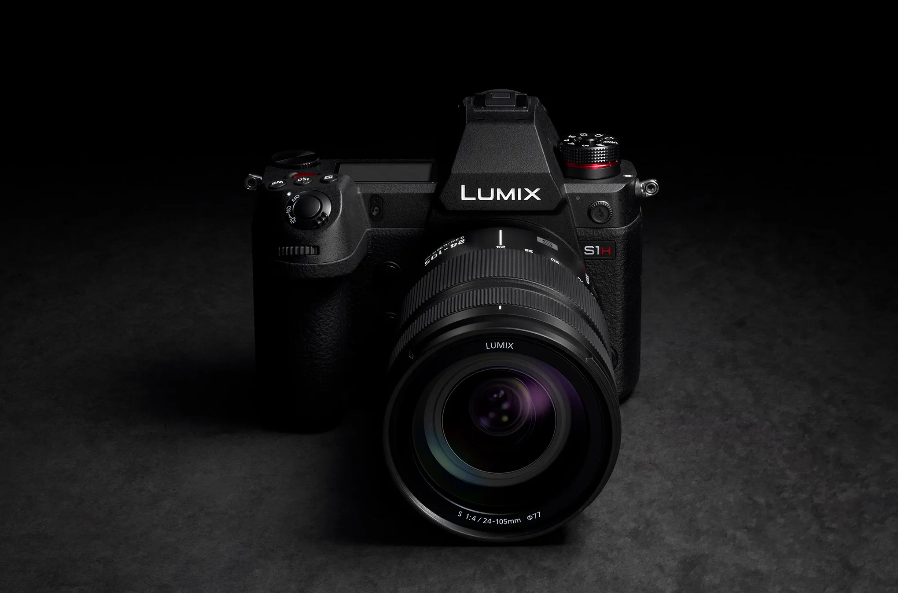
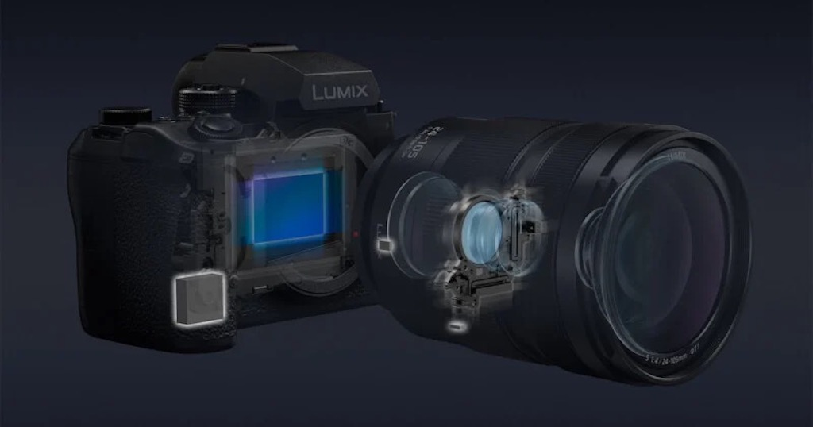
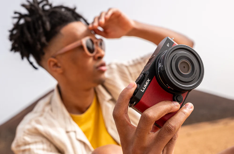

Panasonic Lumix - Khơi nguồn cảm hứng sáng ảnh và thước phim chuyên nghiệp.
Được thành lập với sứ mệnh mang lại những giải pháp hình ảnh tiên tiến nhất, dòng máy ảnh và ống kính Lumix của Panasonic đã khẳng định vị thế vững chắc trong lòng các nhiếp ảnh gia và nhà làm phim trên toàn thế giới.
Chúng tôi tự hào cung cấp các dòng máy ảnh Full-frame và M43 đột phá, nổi bật với hệ thống lấy nét theo pha (PDAF) thế hệ mới, khả năng quay video chất lượng cao và hệ thống chống rung dẫn đầu ngành công nghiệp.

Máy ảnh Panasonic Lumix sở hữu chất lượng kỹ thuật vượt trội, dẫn đầu ngành về công nghệ quay video nhờ tính năng Open Gate quay toàn cảm biến và hệ thống tản nhiệt chủ động không giới hạn thời gian. Máy nổi tiếng với hệ thống chống rung thân máy (IBIS) tốt nhất thế giới, kết hợp công nghệ Active I.S giúp quay phim cầm tay mượt mà như dùng gimbal vật lý. Từ các thế hệ mới như Panasonic Lumix S5II hay G9II, Lumix đã có bước nhảy vọt khi trang bị hệ thống lấy nét lai theo pha (Phase Hybrid AF) tích hợp AI, nhận diện và bám đuổi chủ thể cực nhanh, chính xác. Thuộc liên minh ngàm L-Mount cùng Leica và Sigma, dòng máy này mang lại hệ sinh thái ống kính quang học đỉnh cao, sắc nét. Toàn bộ thân máy được chế tác từ hợp kim magie kháng thời tiết bền bỉ, hoạt động tốt ở môi trường khắc nghiệt đến -10°C. Đây là thiết bị tối ưu, mạnh mẽ và toàn diện nhất dành cho các nhà làm phim và người sáng tạo nội dung hybrid chuyên nghiệp.

Panasonic Lumix là thương hiệu tiên phong tạo nên những đột phá công nghệ mang tính cách mạng cho ngành máy ảnh thế giới. Thành tựu lớn nhất của hãng là việc khai sinh ra chiếc máy ảnh không gương lật (Mirrorless) đầu tiên, giải phóng người dùng khỏi hệ thống gương lật cồng kềnh của DSLR. Trong mảng video, Lumix là cái tên đi đầu đưa các định dạng điện ảnh chuyên nghiệp như quay 4K/60p 10-bit nội bộ, 6K/8K và mã hóa Apple ProRes vào một thân máy nhỏ gọn, được Netflix chứng nhận cho sản xuất phim thương mại. Đặc biệt, tính năng Open Gate độc quyền cho phép quay toàn cảm biến, tối ưu hóa việc cắt khung hình dọc/ngang cho nhà sáng tạo nội dung. Gần đây, Lumix tiếp tục bùng nổ với công nghệ lấy nét lai theo pha Phase Hybrid AF tích hợp trí tuệ nhân tạo AI, triệt tiêu hoàn toàn hiện tượng bắt hụt nét. Kết hợp cùng thuật toán Active I.S. chống rung giả lập gimbal đỉnh cao và tính năng Real Time LUT áp màu trực tiếp khi chụp, Lumix đã tái định nghĩa tiêu chuẩn công nghệ, biến chiếc máy ảnh thành một phòng studio di động toàn năng.

Về khía cạnh đồng hành sáng tạo, Panasonic Lumix được định vị là "người bạn đồng hành tối thượng" của các Creator nhờ khả năng đơn giản hóa quy trình làm việc phức tạp. Đột phá lớn nhất chính là công nghệ Real Time LUT, cho phép người dùng nạp trực tiếp các màu điện ảnh (.CUBE) vào máy để áp ngay khi quay chụp, xuất thẳng video đẹp mà không cần hậu kỳ phức tạp. Kết hợp với ứng dụng LUMIX Lab siêu tốc, các nhà sáng tạo nội dung có thể truyền file sang điện thoại và đăng tải lên mạng xã hội chỉ trong vài giây. Ngoài ra, việc hãng phát triển trào lưu "Open Gate" đã giải phóng tư duy làm phim: chỉ với một lần bấm máy bằng toàn bộ cảm biến, bạn có thể tự do cắt thành video dọc cho TikTok hoặc video ngang cho YouTube mà không sợ mất chi tiết. Từ một chiếc máy ảnh, Lumix đã biến thành một studio di động, giải phóng tối đa thời gian để Creator tập trung hoàn toàn vào việc sáng tạo ý tưởng.
* Vui lòng cung cấp số sê-ri sản phẩm khi yêu cầu hỗ trợ bảo hành.